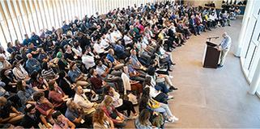

Mandel Fellows Day 2023 üîó
2023-05-03
Back to News from The Mandel Center for Leadership in the Negev
2023-05-03

2023-04-26

2022-11-17

2022-09-12
2022-03-30

2021-11-17

2021-10-17

2021-07-28

2021-07-14
2021-06-23

2021-06-22

2021-05-27

2021-03-02

2020-12-21

2020-07-16
2020-07-15

2020-05-05

2020-04-23
2020-04-22

2020-04-01

2020-02-20

2020-02-05
2020-01-05

2019-12-25

2019-12-12
2019-11-18
2019-11-03

2019-10-20

2019-10-17

2019-10-02

2019-09-23

2019-08-01

2019-07-31

2019-06-21

2019-06-20

2019-06-05

2019-05-16

2019-04-17

2019-04-12

2019-04-11
2019-03-07

2019-03-01

2018-04-11

2019-02-13
2019-02-06

2019-01-25

2019-01-10

2018-12-14

2018-12-03

2018-10-31

2018-10-25

2018-10-08

2018-06-06

2018-06-06

2018-06-01

2018-05-15
2018-05-01

2018-03-23
2018-03-12

2018-03-07

2018-02-27
2018-02-23

2018-01-25
2018-01-23

2018-01-17

2017-12-22

2017-11-22

2017-11-17

2017-10-24

2017-09-13

2017-05-29

2017-05-23

2017-04-18

2017-03-23

2017-03-15

2017-03-01
2017-01-15
2016-12-29
2016-12-01

2016-11-03

2016-07-13

2016-06-30

2016-06-28

2016-06-19
2016-05-31

2016-05-25

2016-05-25

2016-03-16
2016-03-14

2016-03-02

2016-02-16

2016-02-09

2015-10-19
2015-10-19

2015-10-19

2015-08-04
2015-08-04
2015-08-04

2014-06-08
2014-06-05
2014-02-23

2014-02-05
2014-01-28

2014-01-12
2014-01-07
2013-11-18
2013-11-18
2013-10-24

2013-10-24

2013-06-04